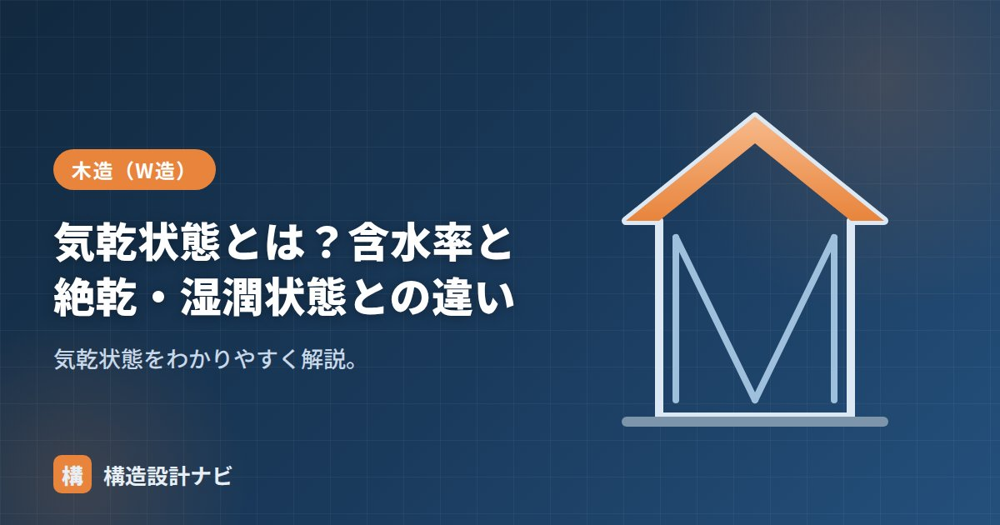

気乾状態とは？含水率と絶乾・湿潤状態との違い

気乾状態（きかんじょうたい）とは、木材が大気中の湿度と釣り合った（平衡した）状態のことです。英語では air-dry condition と呼ばれます。木材は周囲の空気から水分を吸ったり放出したりする性質があり、長期間大気中に置かれると一定の含水率に落ち着きます。この状態が気乾状態で、木材の重さ（気乾比重）や強度を表すときの標準的な基準状態として使われます。
- 気乾状態は大気の湿度と平衡した状態で、日本では含水率約15%が目安
- 絶乾状態は含水率0%、繊維飽和点は約30%で、強度変化の境目になる
- 繊維飽和点以下では、乾燥するほど木材は収縮し強度が上がる
含水率とは
木材に含まれる水分の割合を含水率（がんすいりつ）といい、次式で表します。
分母が「水を含んだ全体の重量」ではなく「水分を完全に抜いた絶乾時の重量」である点がポイントです。このため、伐採直後の生材では含水率が100%を超えることも珍しくありません。
計算例：絶乾重量4.0kgの木材が0.6kgの水分を含んでいるとき、含水率は 0.6 ÷ 4.0 × 100 ＝ 15% となります。
気乾状態の含水率
気乾状態の含水率は、日本の気候ではおおむね15%前後（約12〜18%）です。木材は周囲の湿度に応じて水分を吸放出し、最終的にこの平衡状態に落ち着きます。気乾比重はこの状態での比重で、木材の重量計算の基準になります。
建築用の構造材では、施工後の狂い（反り・割れ）を防ぐため、あらかじめ人工乾燥（KD材）や天然乾燥で含水率を下げた乾燥材を使うのが一般的です。JASの構造用製材には乾燥処理の程度を示す表示区分があり、含水率のグレードが規定されています。
絶乾・湿潤状態との違い
木材の水分状態は、含水率の低い順に次のように整理できます。
| 状態 | 含水率の目安 | 内容 |
|---|---|---|
| 絶乾（全乾）状態 | 0% | 炉で乾燥させ水分を完全に抜いた状態 |
| 気乾状態 | 約15% | 大気の湿度と平衡した状態 |
| 繊維飽和点 | 約28〜30% | 細胞壁が水で飽和し、これ以上は強度が変わらない境目 |
| 生材（湿潤） | 数十〜100%超 | 伐採直後など水分を多く含む状態 |
木材中の水分には、細胞の空隙にある「自由水」と、細胞壁に浸み込んだ「結合水」の2種類があります。乾燥の過程ではまず自由水が抜け、自由水がなくなり結合水だけが残った境目が繊維飽和点です。木材の性質（強度・収縮）が変化し始めるのは、この繊維飽和点を下回ってからです。
含水率と強度・収縮の関係
含水率が繊維飽和点（約30%）より下がると、乾燥するほど木は収縮し、強度が上がります。乾燥が不十分な材は、施工後に収縮して反り・割れ・すき間の原因になります。
収縮の大きさは方向によって異なり、年輪の接線方向がもっとも大きく、半径方向はその半分程度、繊維方向（長さ方向）はごくわずかです。この収縮の異方性が、板材の反り（木表側に凹）や柱の干割れの原因になります。化粧柱にあらかじめ背割りを入れるのも、乾燥収縮による割れを一か所に集めるための工夫です。
含水率の高い未乾燥材をそのまま構造材に使うと、施工後の乾燥収縮で接合部にすき間が生じ、金物のゆるみや床鳴りの原因になります。構造材には乾燥材を用い、現場保管でも雨掛かりを避けることが大切です。
よくある質問
Q1. なぜ含水率は絶乾重量で割るのですか？
分母を絶乾重量（木材の実質部分の重さ）に固定することで、水分量の変化を正確に比較できるためです。全体重量を分母にすると、水分が増えるほど分母も増えて変化がわかりにくくなります。
Q2. 気乾比重とはなんですか？
気乾状態（含水率約15%）での木材の比重です。スギで約0.38、ヒノキで約0.44など樹種ごとの目安があり、建物の固定荷重の計算に使います。詳しくは「木材の比重と密度」で解説しています。
現場で構造用製材を受け入れる際、含水率計の数値だけを見てJASの乾燥区分を確認しない若手をよく見かけます。気乾状態の15%はあくまで平衡値で、搬入直後の材は雨掛かりで想定より高いこともあるため、保管状況まで含めて確認するようにしています。
まとめ
- 気乾状態は大気の湿度と平衡した状態で、含水率は約15%。木材の重量・強度の基準状態。
- 含水率は「水分の重量 ÷ 絶乾時の重量 × 100」で、生材では100%を超えることもある。
- 絶乾は0%、繊維飽和点は約30%、生材はそれ以上。強度・収縮が変化するのは繊維飽和点以下。
- 繊維飽和点より下では乾くほど収縮・強度増。乾燥不足は反り・割れの原因になる。